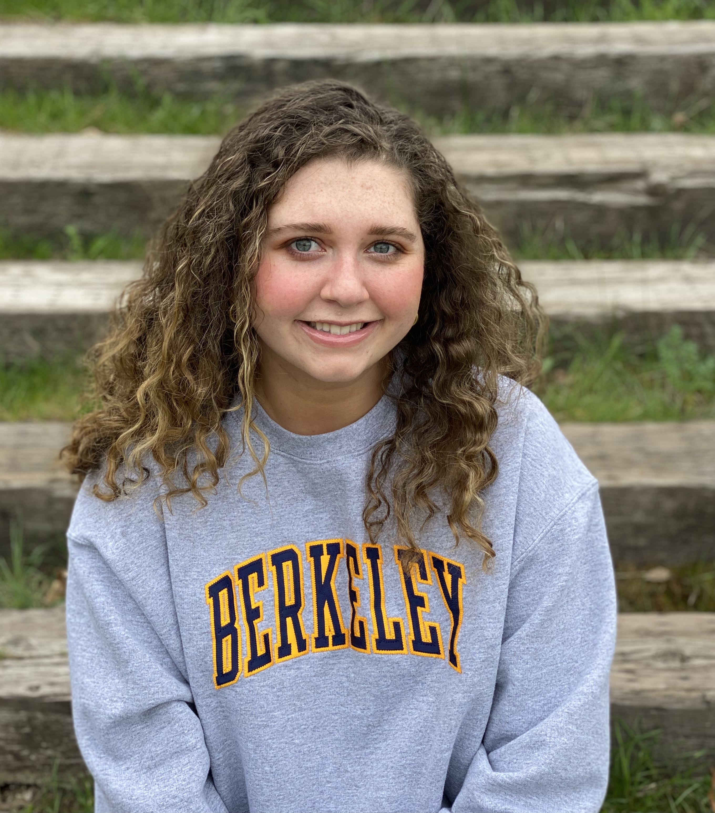
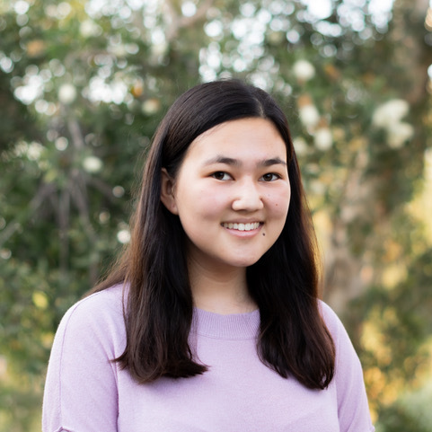
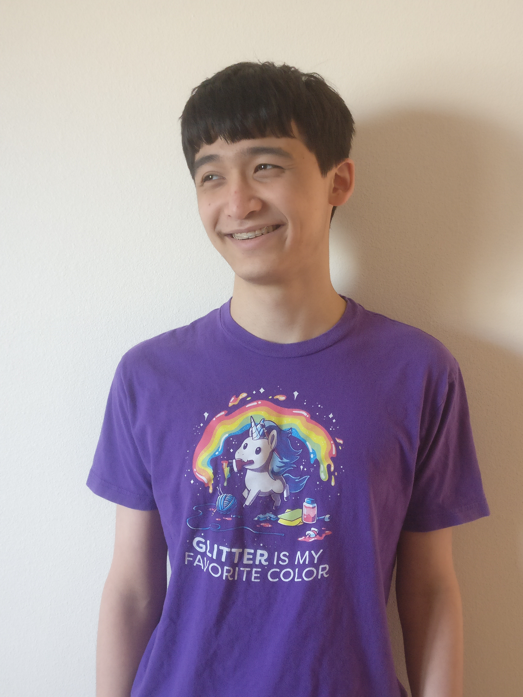
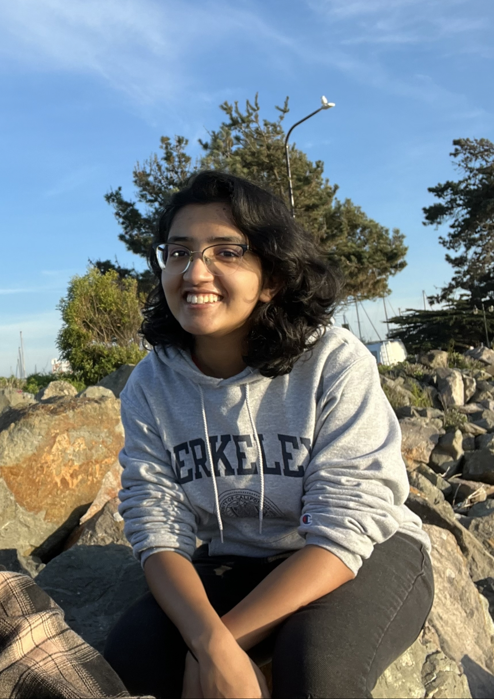
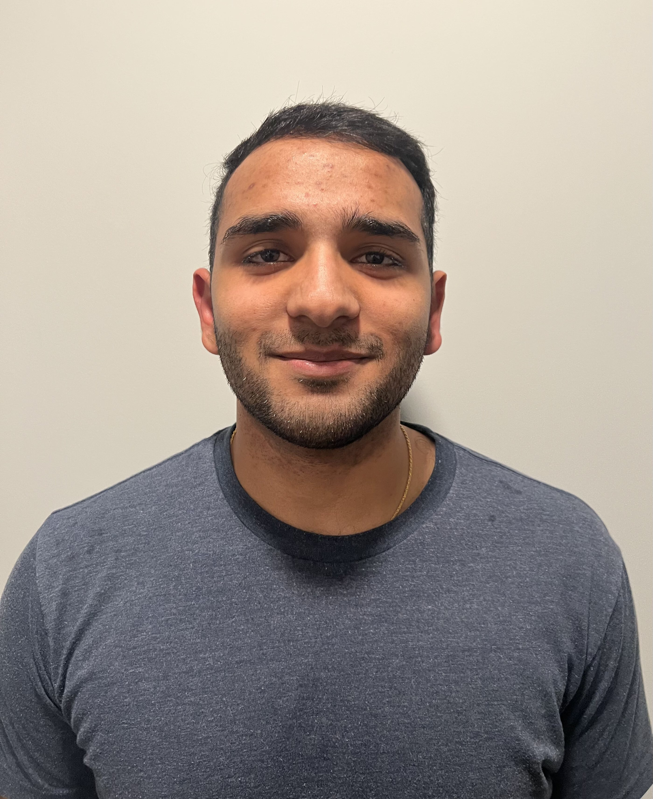

Officers
We hold office hours and run events with the help of volunteers from the Berkeley mathematics community. Most of our officers are familiar with many of the math courses required for the math and applied math majors.
Becoming a MUSA officer is a great way to get involved. If you're interested, keep an eye on our mailing list in August!
We also have an incomplete list of former officers.
| Lily Li | Hi! My name is Lily and I’m the former president of MUSA. When I’m not in Evans, I enjoying playing board games, hiking near waters, and experimenting with cooking. I also play a concert on the Campanile bells every Wednesday 8am :> |
|---|---|
| President Emeritus | |

|
|
| Bryce Goldman | I'm a third year math major from Oakland interested in algebra, topology, and category theory. In my free time I enjoy rolling natural 1's in Dungeons and Dragons, losing to more skillful players at Magic the Gathering, and wishing I had less nerdy hobbies. Come say hi if you want to talk about math or are looking for someone to grieve the (third?) death of Futurama with. Math courses I'm familiar with: 104, 110, 113, 114, 115, 116, 142, 160, 185, 250A, 250B, 125A, 202A, and 215A |
| President | |

|
|
| Rhea Kommerell | Hi! I'm a second year double majoring in Math and Computer Science. One of the things I love most about math is how cool my fellow math people are, so I'm excited to meet you! In my free time you'll find me pretending I know how to embroider, underestimating how long ambitious cooking projects will take (dinner at 10 pm anyone?), playing tabletop games, and having friendly debates. |
| Vice President | |
| Karan Dhir | Hi! I’m a junior majoring in Math and Computer Science. When I’m not doing those, I love to produce music, play basketball and video games, and spend hours in the endless cycle that is YouTube. Come say hi if you want to discuss anything from math to whether Jar Jar Binks is actually a Sith Lord.
Courses I’m familiar with: Math 1A/B, 53, 54, 74, 110; CS 10, 61A, 61B, 61C, 70; EE16A, EE16B |
| Webmaster | |

|
|
| Alex Bouquet | Hello~! I'm a freshman planning to major in Math and Physics. Outside of academics I'm also interested in competitive yoyoing, diabolos, anime, and video games, so if any of those sound fun to you please come and chat with me!! I also really like noodles! Noodles are cool! We should make noodles together!! |
| Treasurer | |
| Zoe Sudit | Hi! I’m a second-year intending to double major in Applied Math and Physics. In my spare time, I enjoy reading, baking, and listening to any and all types of music. A fun fact about me is that I like to name my plants after political figures (my latest addition is named ‘Doug’, after the third gent!). Reach out to me if you would like to nerd out about books, music, or literally anything at all! |
| Professional Chair | |
|  | |
| Varun Kabra | Hey! I’m a sophomore intending to major in mathematics and physics. I love swimming and used to pursue the sport competitively. Courses I’m familiar with: Math 1A/1B, Math 53, Math 55, CS 61A, CS 61B, Physics 5A, Physics 77 |
| Professional Chair | |
| Emily Muller-Foster | Hi everyone! I transferred from Monterey Peninsula College last Fall and am majoring in Applied Math with an emphasis in Data Science. I'm also interested in programming and algebra. Before transferring to Cal, I played upright bass in my community college jazz band and played electric bass in a rock band. Now I spend my free time cooking, listening to podcasts, reading, and exploring Berkeley with my dog, Baxter. Feel free to join us on a walk anytime! |
| Publicity Chair | |
| Madeleine Fruman | My name is Maddie and I’m a third-year math and CS major from SoCal. In my free time I enjoy reading, practicing violin (come to UCBSO concerts!), and going for walks around Berkeley. |
| Publicity Chair | |
|  | |
| Scott McIntyre | Hello--I'm Scott (he/him/his), a third-year math major. When I'm not studying analysis, I enjoy finding both cool trails around Berkeley and ways to turn conversations into punversations. If you'd like to meet me and chat, then feel free to say hi :) Classes I’m familiar with: Math 104, 110, 113, 124, 128a, 141, 185, 202a, 202b, 218a; Stat 134, Phys 137a |
| Academic Chair | |
| Karan Agarwal | Hi! I am Karan. I’m a junior majoring in Applied Math and CS. In my free time you’d find me playing the drums, video games, or listening to bands like pink floyd, zeppelin, porcupine tree, or even system of a down. I love meeting new people so come say hi if you want to talk about math, music, video games, soccer, or literally anything! |
| Academic Chair | |
| Nir Elber | Hallo! I'm a current freshman intending to major in mathematics, my mathematical interests interests being mostly number theory and number theory. I am also known to play Spelunky, read science fiction, use TeX, and fold origami, all in various amounts of excess. |
| Academic Chair | |
|  | |
| Andy Chen | Hi, everyone! My name is Andy, and I love math (i think?), teaching, and taking good care of my last brain cell. Ask me about math at Cal, my power ranking of desserts, or the great state of Delaware! |
| Diversity Chair | |

|
|
| Chris Randall | Hi! I'm a fourth year math major, mostly interested in algebra. I'm also the president of Cal Origami and an oStem officer, so reach out if you want to talk about any of that stuff! |
| Diversity Chair | |
| Aditi Shyam Sunder | Hey everyone! My name is Aditi and I am a second year Applied Math major. In my free time, I enjoy doing yoga, singing, trying out new cuisines (Ethiopian or Burmese anyone?), listening to music, and watching Netflix. Feel free to drop by during office hours to talk about math, classes, or just life in general. Excited to meet you all! |
| Diversity Chair | |
|  | |
| Trace Zhu | I'm Trace (he/him) and I'm a third year math major who has strong opinions about mechanical keyboards. A fun fact about me is that I was named after the sum of eigenvalues of a matrix. |
| Diversity Chair | |
| Tina Li | Hi everyone! My name is Tina, and I am a third year, studying Molecular Environmental Biology, Psychology and Applied Math, from SoCal! In my free time, I enjoy backpacking and being outdoors, volunteering at my local aquarium and animal shelter, and reading at the Glade! Stop by my office hours if you have any questions or just for fun! Excited to meet you all! :) |
| Outreach Chair | |

|
|
| Lakshay Patel | Hello! I’m a sophomore majoring in math and philosophy from New Jersey. I like backpacking/hiking, video games, Pixar movies, playing the violin, and teaching math |
| Outreach Chair | |
|  | |
| Austin Lei | Hello everyone! I am a third year math major, and I am the head problem writer for BMT. I like math, games, and getting disappointed by the San Jose Sharks. |
| Outreach Chair | |

|
|
| Zain Shields | Hello everyone! My name is Zain and I am a second year Math major. In my free time, I like to play board games, speedrun, and play dungeons and dragons. Feel free to reach out if you ever want to talk about your love of math with another person, or if you need help. |
| Social Chair | |